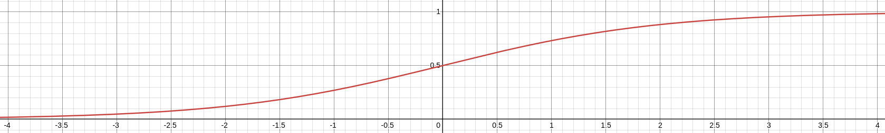

This section presents a basic overview of linear regression. To dive into the mathematics, see The Math Behind Linear Regression.
Linear regression is a method that aims to predict an outcome variable based on one or more predictor variables. The outcome and all the predictor variables are continous and quantitative. For one predictor, it can be written as $$ outcome = b + w \cdot predictor $$ The term $w$ is known as a weight and $b$ is known as a bias. Note that this is the same linear equation commonly learned in high school, $y=mx+b$, where $m$ is the slope and $b$ is the y-intercept. It can be easily expanded to include more predictor variables: $$ outcome = b + w_1 \cdot predictor_1 + w_2 \cdot predictor_2 + ... + w_n \cdot predictor_n, $$ where $n$ is the number of predictor variables. This equation represents what is known as the General Linear Model (GLM). Linear regression aims to find the values of $b$ and $w_1$ to $w_n$ such that the line represented by the equation is the line of best fit for the data.
Linear regression is useful if the outcome variable is a continuous variable. Sometimes that is not the case. In the case that the outcome variable is binary and discrete, logistic regression is useful. Some examples of binary, discrete outcome variables are:
In each of these there are two and only two possible outcomes. Logistic regression is a form of the Generalized Linear Model. In a Generalized Linear Model, the linear equation for linear regression is inserted into what is know as a link function. In the case of logistic regression, this link function is known as the sigmoid function as shown below: $$ \sigma(z) = {{math.fraction("1", "1+e^{-z}")}} $$ 
Inserting the linear regression formula into the link function looks like this: $$ \sigma(z) = {{math.fraction("1", "1+e^{-(b + w_1 \\cdot predictor_1 + w_2 \\cdot predictor_2 + ... + w_n \\cdot predictor_n)}")}} $$
Visually, it can be seen that the function maps any input to between 0 and 1. For the purposes of classification, any output below $0.5$ is classified as the first class, and any output above $0.5$ is classified as the second class.
The linear regression equation is $${{math.hat("Y")}} = b + WX,$$
where ${{math.hat("Y")}}$ is a $N \times 1$ vector of predicted outcomes, $b$ is the bias, $W$ is a $1 \times M$ vector of weights, and $X$ is a $M \times N$ matrix. $N$ is the number of records in a dataset and $M$ is the number of features. ${{math.hat("y_n")}}$ is the $n$th element in ${{math.hat("Y")}}$, $b_n$ is the $n$th element in $B$, $w_m$ is the $m$th element in W, and ${{math.sub("x", "m,n")}}$ is the element in the $m$th row and $n$th column of $X$.
As an example, let $N=3$ and let $M=2$: $$ {{math.beginAlign()}} {{math.beginMatrix()}} {{math.hat("y_1")}} \cr {{math.hat("y_2")}} \cr {{math.hat("y_3")}} {{math.endMatrix()}} & = b + {{math.beginMatrix()}} w_1 & w_2 {{math.endMatrix()}} {{math.beginMatrix()}} {{math.sub("x", "1,1")}} & {{math.sub("x", "1,2")}} & {{math.sub("x", "1,3")}} \cr {{math.sub("x", "2,1")}} & {{math.sub("x", "2,2")}} & {{math.sub("x", "2,3")}} {{math.endMatrix()}} \\\\ {{math.beginMatrix()}} {{math.hat("y_1")}} \cr {{math.hat("y_2")}} \cr {{math.hat("y_3")}} {{math.endMatrix()}} & = b + {{math.beginMatrix()}} w_1{{math.sub("x", "1,1")}} + w_2{{math.sub("x", "2,1")}} \cr w_1{{math.sub("x", "1,2")}} + w_2{{math.sub("x", "2,2")}} \cr w_1{{math.sub("x", "1,3")}} + w_2{{math.sub("x", "2,3")}} {{math.endMatrix()}} {{math.endAlign()}} $$
The initial state of linear regression is to start with random values for the weights and bias. Using these values, we calculate the predicted outcome vector ${{math.hat("Y")}}$. We can calculate the amount of error from the real values using the mean squared error function $$ L = {{math.sum("i=1", "N")}}(y_i - {{math.hat("y_i")}})^2 $$,
where L is the total error, or "loss". The end goal is to find values for $b$ and $W$ such that $L$ is minimized. For this, we use gradient descent.
Take a look at the parabola above given by $f(x)=x^2$, and notice the point $(-2, 4)$. Imagine that the point is a ball. Which way is the ball going to roll? To the right of course because of gravity. It will roll all the way to the bottom of the parabola, and it might start travelling up the hill on the right. But eventually it will come to rest at the bottom ($x=0$).
Now consider the slope of the parabola at any given point. To the left of $x=0$, the slope is negative. To the right, the slope is positive. Thinking about the ball analogy again:
This can be mathematically represented as $x_{{'{new}'}} = x_{{'{old}'}} - {{math.fraction("dy", "dx")}}$. Commonly a term $\alpha$, known as the learning rate, is applied to control the rate at which the value of $x$ will update. The final form of gradient descent is then $$x_{{'{new}'}} = x_{{'{old}'}} - \alpha{{math.fraction("dy", "dx")}}.$$
The formula for ${{math.fraction("\\partial L", "\\partial w_m")}}$ can be found in a similar manner: $$ {{math.beginAlign()}} {{math.fraction("\\partial L", "\\partial w_m")}} & = [{{math.sum("i=1", "N")}}(y_i - {{math.hat("y_i")}})^2]' \\ & = [{{math.sum("i=1", "N")}}(y_i - (b + w_1{{math.sub("x", "1,i")}} + ... + w_m{{math.sub("x", "m,i")}}))^2]' \\ & = [{{math.sum("i=1", "N")}}(y_i - (b + {{math.sum("j=1", "M")}}w_j{{math.sub("x", "j,i")}}))^2]' \\ & = 2{{math.sum("i=1", "N")}}[y_i - (b + {{math.sum("j=1", "M")}}w_j{{math.sub("x", "j,i")}})[{{math.hat("y_i")}} - (b + {{math.sum("j=1", "M")}}w_j{{math.sub("x", "j,i")}})]'] \\ & = 2{{math.sum("i=1", "N")}}[y_i - (b + {{math.sum("j=1", "M")}}w_j{{math.sub("x", "j,i")}})(0-(0+{{math.sub("x", "m,i")}}))] \\ & = -2{{math.sum("i=1", "N")}}{{math.sub("x", "m,i")}}(y_i - (b + {{math.sum("j=1", "M")}}w_j{{math.sub("x", "j,i")}})) {{math.endAlign()}} $$
We iteratively apply these formulas to adjust the values of the bias and the weights until the partial derivatives equal 0: $$ {{math.beginAlign()}} {{math.sub("b", "new")}} & = {{math.sub("b", "old")}} - \alpha{{math.fraction("\\partial L", "\\partial b")}} \\ {{math.sub("w", "m,new")}} & = {{math.sub("w", "m,old")}} - \alpha{{math.fraction("\\partial L", "\\partial w_m")}} {{math.endAlign()}} $$